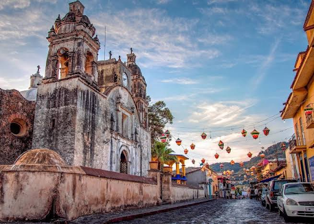

Pueblos Mágicos de Morelos
Los Pueblos Mágicos de Morelos son destinos llenos de tradición, cultura y belleza natural.
Cada uno ofrece una experiencia única para turistas que buscan descubrir el México auténtico.
Tepoztlán
Reconocido por su ambiente místico y espiritual, Tepoztlán cautiva con su mercado tradicional, su imponente cerro del Tepozteco y su vibrante vida cultural. Perfecto para senderismo, festivales y gastronomía local.
Tlayacapan
Este lugar se caracteriza por sus majestuosos cerros desde los cuales puedes apreciar vistas panorámicas espectaculares, pero sobre todo, por su valor histórico arraigado a la cultura religiosa del siglo XVI

Xochitepec
Sus principales atractivos son lugares históricos, entre los cuales destaca la Iglesia San Juan Evangelista, un inmueble que data del siglo XVII y fue fundado por los Franciscanos en el siglo XVl. Actualmente es el Centro Cultural Xochitepequense y oficinas del gobierno municipal. En ella se han filmado películas.

Tlaltizapán de Zapata
Nombrado Pueblo Mágico en el año 2023, Tlaltizapán se posiciona y repunta con destino predilecto para quienes gustan de la historia, turismo cultural, ecoturismo y de explorar rincones llenos de magia y tradición.